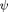

REACTION DIFFUSION DEMONSTRATION
This script illustrates the capabilities and different uses of the ReactionDiffusion Solver in three examples.
Contents
Example 1: The Brusselator
The Brusselator is a simple PDE system that is capable of exhibiting some fairly complex behaviours. We use the following PDE description which allows spatially varying parameters and
First specify the problem domain. Just the boundaries, not the internal mesh points.
xlim = [-1 1];
Now specify the parameters. We'll make b our spatially varying parameter. The best way to do this is to make it a function of x using anonymous functions
a = 1; b = @(x) 2-x; x = linspace(xlim(1), xlim(end), 200); plot(x, b(x)); xlabel('x'); ylabel('b(x)');
Now we'll define the kinetics. The Brusselator is simple enough that you can just use an anonymous function. For a more complex problem you'd write an m file whose signature is of the form
|function f = mykinetics(t, x, y)|
The kinetics can be space and time-varying
f = @(~, x, y) ...
[a + y(1, :).^2 .* y(2, :) - (b(x) + 1) .* y(1, :);
b(x) .* y(1, :) - y(1, :).^2 .* y(2, :)];
A couple of extra things
varnames = {'\phi', '\psi'}; % only need these to make graphs look nice
diffusion = {1e-3, 0};
define some initial conditions as functions of x. We'll set the initial to be 1, and  to be sinusoidal
y0 = {1, @(x) b(x) + 0.2 * sin(4*pi*x)};
Now we'll create our reaction-diffusion system, using a spectral method
sim = ReactionDiffusion('kinetics_fcn', f, ... 'diffusion', diffusion, ... 'n', 20, ... 'xlim', xlim, ... 'y0', y0, ... 'varnames', varnames, ... 'Tspan', [0 10], ... 'method', 'spectral');
simulation simply involves calling the 'simulate' method. You need to do this again every time you adjust a setting or parameter.
sim.simulate()
Computing discretisation ... done Solving ode system ... done (elapsed time 0.13 seconds)
Let's plot the results of the first variable, .
figure(1)
sim.image(1); % Display the first variable in image form
Hmmm, looks like we didn't simulate for long enough, and could use better resolution. Let's try again
sim.Tspan = [0 40]; sim.n = 200; sim.simulate(); figure(2) sim.image(2);
Computing discretisation ... done Solving ode system ... done (elapsed time 3.63 seconds)
Sometimes it's better to look at a movie than at a picture. (you need to run the code not look at the static HTML page to see this)
figure(3) sim.animation_speedup = 5; % speed up simulation time by a factor 2 in real time sim.animate(); % Animate both variables together. Could also do e.g. % sim.animate(1); % to animate the first one
Let's put diffusion on \psi instead. These solutions don't actually exist we think - the problem blows up, but if using finite differences the spikes remain finite. So, let's switch to a 2nd order finite difference discretisation with 1000 mesh points and see what happens
figure(4)
sim.method = 'fd';
sim.n = 1000;
sim.diffusion{1} = 0;
sim.diffusion{2} = 1e-4;
sim.simulate();
sim.image(1);
Computing discretisation ... done Solving ode system ... done (elapsed time 11.78 seconds)
Now let's do an exercise to show visually that our method converges with fine enough discretisation - we'll return to the Chebyshev spectral method
sim.Tspan = [0 10];
sim.diffusion = {1e-2, 0};
sim.method = 'spectral';
sim.n = 10;
sim.simulate();
figure(5)
subplot(2,2,1)
sim.image(1);
title(sprintf('n = %d', sim.n));
sim.n = 20;
sim.simulate()
subplot(2,2,2)
sim.image(1);
title(sprintf('n = %d', sim.n));
sim.n = 50;
sim.simulate()
subplot(2,2,3)
sim.image(1);
title(sprintf('n = %d', sim.n));
sim.n = 100;
sim.simulate()
subplot(2,2,4)
sim.image(1);
title(sprintf('n = %d', sim.n));
Computing discretisation ... done Solving ode system ... done (elapsed time 0.09 seconds) Computing discretisation ... done Solving ode system ... done (elapsed time 0.10 seconds) Computing discretisation ... done Solving ode system ... done (elapsed time 0.15 seconds) Computing discretisation ... done Solving ode system ... done (elapsed time 0.26 seconds)
Example 2: Ermentrout model
This example uses the additional file ermentrout.m which contains the model equations and parameters. The function ermentrout gives us a handle to the RHS function with everything initalised.
First, we need to initialise the kinetics. We define a spatially varying v1 parameter for the model.
close all
xlim = [-1 1];
v1fun = @(x) 5e-3 * (1 + tanh(x/0.25)) - 29.6e-3;
The function ermentrout provides us with a function handle to simulate the kinetics with, together with a few extra things, like the names of the variables in case you forget which is which
[fn, varnames, xlim, y0] = ermentrout('xlim', xlim, 'v1fun', v1fun);
We want to run a simulation where we put a constant diffusion coefficient on the membrane potential equation, and no diffusion on the other variables
diffusion = [1e-4, 0, 0];
We now initialise the Reaction Diffusion simulation. This problem is solved more efficiently by a finite difference method, so we use that on a 2000 point mesh.
sim = ReactionDiffusion('kinetics_fcn', fn, ... 'xlim', xlim', ... 'diffusion', diffusion, ... 'varnames', varnames, ... 'method', 'fd', ... 'n', 2000, ... 'y0', y0);
Let's do our first simulation. We provide a set of time values to interpolate the solution onto, simulate, and then plot the membrane potential
sim.Tspan = linspace(0, 40, 1000); sim.simulate() sim.image(1)
Computing discretisation ... done Solving ode system ... done (elapsed time 21.89 seconds)
Plot the time variation of membrane potential at the middle of the domain
t = linspace(0, 40, 500); y = sim.soln(1, t, 0); plot(t, y)
Now try increasing the diffusion coefficient
sim.diffusion{1} = 1e-3;
sim.simulate()
sim.image(1)
Computing discretisation ... done Solving ode system ... done (elapsed time 19.22 seconds)
Now plot the membrane potential at the middle of the grid over time
y = sim.soln(1, t, 0); plot(t, y);
And let's convince ourselves that if we use a different method we still get the same answer
sim.method = 'fd'; sim.n = 2000;
sim.simulate();
sim.image(1)
Computing discretisation ... done Solving ode system ... done (elapsed time 19.09 seconds)
Example 3: Variable diffusion coefficient - FKPP equation
In this example we use the Fisher-Kolmogorov-Petrovskii-Piscounov equation to illustrate the use of spatially varying diffusion coefficients
We define the kinetics using an anonymous function. Note the use of .* as the function must be callable with multiple right hand sides
f = @(t, x, y) y .* (1 - y);
We'll use a comb-like diffusion function for the diffusion coefficient
alpha = 15; f1 = @(x) exp(-alpha*x.^2); d = @(x) 1e-3 - 9.9e-4*f1(mod(5*x + 1, 2) - 1); x = linspace(-1, 1, 1000); plot(x, d(x)); xlabel('x'); ylabel('D(x)');
We'll start from a smooth initial profile from one side of the domain
y0 = @(x) 0.5 * (1 - tanh(200*(x +0.8))); plot(x, y0(x)); xlabel('x'); ylabel('u_0(x)');
Now we simply simulate and plot
sim = ReactionDiffusion('kinetics_fcn', f, 'diffusion', {d}, ... 'method', 'fd', 'n', 2000, 'Tspan', [0 60]); sim.y0 = {y0}; sim.simulate() sim.image(1)
Computing discretisation ... done Solving ode system ... done (elapsed time 1.22 seconds)
Animate the solution (if running this example from within MATLAB)
sim.animation_speedup = 6; sim.animate()